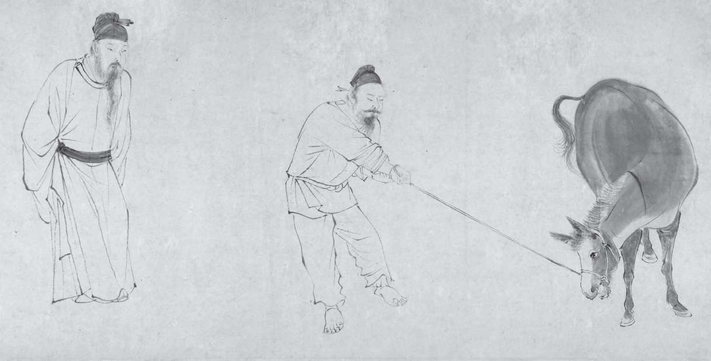

中国最早的散文体叙事作品至少可以追溯到公元前5世纪，但中国作家究竟何时开始有意识地创作小说，仍然没有答案。这些作品虽然并不被视为文学创作，许多却生动有力地表现了情感、鬼神以及种种自然和超自然的现象。然而人们由于深信孔子“述而不作”（《论语·述而》）的教诲，便以为历史仅仅是记录事实，后世归于孔子的编年史 [1] 的简洁风格便反映了此种观念。不以历史为蓝本的故事被人们讥为“小说”，这个词很久之后变成英语fiction的汉语译名。然而，尽管当代讨论小说时经常把早期历史和哲学经典著作中的寓言和虚构段落包括进来，这些作品在古代是极不可能被人们蔑称为早期史家所定义的“小说”的。对于史家班固（32-92）来说，“小说”仅仅是“巷语”，这些记录对政治有参考意义，却没有文学价值。后来的几个世纪里，这个标签一直用来表达温和的贬斥。
然而，在中国最早的长篇叙事作品《左传》里明显能够找到虚构成分。这部作品据称为盲人史家左丘明（约前4世纪）所撰。在它的第一条编年记录里，有一长段文字赞美了孝道的救赎力量。深受母亲嫌恶的郑庄公阻止了母亲试图推翻自己的密谋，然后将她囚禁起来，发誓不到黄泉不再相见。然而，当他得知管理疆界的官吏颍考叔省下食物是为与母亲分享时，不禁深受触动，悲叹道：“尔有母遗，繄我独无！”他向颍考叔坦承了自己的悔恨之情，后者向他献计，挖地道直达泉水，既不违背誓言，也可与母亲相见。当母亲走出地道时，母子都吟诗表达欣悦，故事最后称赞了这位官吏的至纯孝心 [2] 。
直到8世纪，刘知几（661-721）才在《史通》（710）里正式区分了历史和小说，他把与严肃历史著作相对的文本称为“调谑小辩” [3] 。后来的许多学者便按照内容而不是真实性将叙事作品分为两类。历史讲述公共话题：军事、政治、外交以及宫廷事务，而小说描绘的则是私人生活。然而，很多早期作品无法纳入这种二分结构。例如结合了历史传奇和游记的《穆天子传》（约前4世纪）虽然记述的是帝王巡游天下的事，却充满了各种虚构主题，颇具超自然色彩的地理著作《山海经》（约前320）也是如此。
在自觉创作小说之前的一千三百年里，文人们如何理解这类作品的功能与目的？像下面这篇选自干宝（活跃于320年前后）《搜神记》的故事，我们应当如何看待？
这则简短的故事颇能代表后来所称的“志怪”小说。干宝这样的记录者兼编纂者借用了官方史书的记录风格，为这些怪异现象的记述蒙上一层历史的高贵色彩。这则故事将同情、机智和感恩的高贵品质赋予老虎，让它们成为道德的榜样。此类故事先是在口头流传，然后被文人记录，它们的目的与官方历史是一致的，那就是鼓励人们相信宇宙充满善意，受益于传统的道德观和合乎礼仪的行为，人类所行之事都有意义，遵行伦理也一定有回报。
礼：臧否的史书
在古代中国，写作的首要功能似乎是辅助记忆。周朝（前1027-前256）太史寮的官员 [5] 负责记录祭祖仪式、朝廷谕令、公文信函以及天子的言行。到了战国（前475-前221）中期，写作又获得了伦理教化的功能。面对战争和诸侯国的兼并，思想家们日益频繁地在历史中寻找先例，以促使人们信仰一个规范有序的宇宙。统治者也急于用道德和自然的原因来解释各种变化，所以允许甚至奖掖史学家们著书立说，好为他们的政府披上合法的外衣。
儒家总将道德与天意相联系，为了强化这种传统信仰，早期史家在记录事件时下了一番筛选的功夫，极力为自己的恩主赢得声誉，而将罪责推到他们的竞争者头上。如果某个星座的位置预示着自己国家的兴盛，而某场战役发生在该天象出现之前或之后，那么记录的日期就会被篡改。从一开始，确定事件的日期就是服务于政治意图的，当《庄子》《孟子》等哲学著作表明，故事天生的感染力使它成为宣扬思想的有力工具时，写作的意识形态功能就得到了更广泛的使用。
早期史家的著作并不仅仅是为了传播事实，而是自命负有从历史中提炼道德教训的重任。《春秋》位居托名孔子的“五经”之列，为它作传的史书影响尤其巨大。这些传相信，《春秋》简洁的记述通过省略、双关和风格的微妙暗示表达了道德判断，由此它们确立了一种以恰当的仪礼为基础的伦理规范体系。在这些传里，因果关系遵循报偿原则：道德和仪礼的过犯引发战争和动荡，而严守礼法和历史传统则会带来和平和公正。
以史为鉴就必须严肃对待文字的力量，中国第一部既叙事也记言的史书《左传》证明了语言的强大作用。例如，当郑国人聚于乡校，指责他的政策时，子产没有听从毁乡校的提议，认为与其强迫臣民沉默，不如虚心听取他们的意见：
这段文字的最后是托名孔子的评论，他在听说子产的故事后说道：“以是观之，人谓子产不仁，吾不信也。” [6] 在一部以史实叙述为主的书里，偶尔插入这样的议论（一共八十四处）可以表达一种清晰的立场和记述者的道德用意，即让读者相信，善有善报，恶有恶报。
许多早期史书都突出了史家兼说教者捍卫这种道德正义的强力角色。例如在《国语》（前4世纪）中，统治者尽可忽略臣下基于天道循环和历史兴废提出的建议，但结果一定是他们自己或者所爱之人遭遇厄运。晋献公出征骊戎前，史苏警告说，战事虽会胜利，结果却不吉利，晋献公不听，获胜后将敌酋的女儿骊姬封为妃子，并且相信她的诡计，废黜了世子申生，把她的儿子立为继承人。故事里的申生是孝道-百善之先-的化身，然而正是这一美德毁灭了他。在他眼中，孝道的绝对律令甚至比生存还重要，虽然他已得知骊姬的阴谋，却不肯采取任何有辱父亲名声的行动。既然申生最终在祖庙里自缢身亡，读者应当如何看待三位大臣关于骊姬阴谋的慷慨争辩呢？里克感叹史苏的预言即将成为现实，荀息认为事君者的义务就是“君立臣从”，丕郑反驳道：“吾闻事君者，从其义，不阿其惑。惑则误民，民误失德，是弃民也。” [7] 虽然从申生个人的角度看，奉行孝道以悲剧收场，但故事却可能暗示，历史反思本身以及仗义执言的大臣能够发挥阻止道德堕落的作用，并让钟摆复归美德一方。
早期文献经常会对事件作道德评判，这些文字可能是后代编者所加，而且往往托名孔子（或者被理解为孔子的“君子”），并不突出作者。第一部有心强调作者的著作是记录早期历史的杰作《史记》（约前100），该书由史家司马迁（前145-？前87）撰写。其父司马谈临终前嘱咐他不仅要继续家族世代记录宫廷历史的事业，而且要拓宽史家的职责，将历史上杰出人物的功绩也纳入写作范围。当司马迁因为替战败的将军李陵辩护而被控以“诬罔主上”的罪名时 [8] ，他毕生修史的宏愿遭遇了严峻考验。他宁可接受残忍的腐刑，也不肯为避免羞辱而像士人那样自杀，正是为了完成父亲托付的使命。
司马迁的史书虽然是更早历史文献的汇编整理，却有开创性的意义；它在编年体的传统外补充了纪传体的新样式，这就为个人和群体的性格刻画提供了空间。全书长达五十多万字，分为一百三十章，覆盖了约二千五百年的历史，各章的内容有一定交叠。作为二十五史的第一部也是最具创意的一部，《史记》确立了后代史家普遍遵循的许多规范和主题。书中的传记叙事鲜活，引言精炼，节奏明快，让读者身临其境。除了以帝王、将相、刺客和其他人为对象的个人传记外，司马迁还为酷吏、循吏、儒林、游侠、佞幸、滑稽、货殖等各类人群撰写了集体传记，还不忘加上一篇《太史公自序》。
为了教育国人，司马迁重点渲染了他欣赏的事件，省略或只是简短记录了他憎恶的事件，借此暗示出自己的态度。通常出现在每章末尾的“太史公曰”部分则明确表达了他的评价。“悲夫”或“呜呼哀哉”是他惯用的开场语，为读者的思考定下了基调。借助这些情感化的反应，司马迁的《史记》在中国史书传统中第一次将作者本人作为一个角色和评论者带入了作品中。（后世的许多断代史书则选择了更客观的叙述语气，叙述者代表了一种集体声音。）
在《报任安书》里，司马迁为后世保存了一份珍贵记录，亲身讲述了自己的生平、观点和愤懑的心境，也为《史记》的创作雄心提供了证词：“欲以究天人之际，通古今之变，成一家之言。”这些话表明，司马迁认为历史和历史书写都系于人的决定。
纯文学传统
汉朝的作品多半服务于实际的目的，公元220年中央政府的崩溃使得许多题材和形式不再受限制。从3世纪到6世纪，文人们逐渐建立起了一个纯文学传统，写作的声望也提高了。由于尊经的传统抑制了大规模的哲学写作，文学主要采用了评语、散文、书信、游记以及其他短篇形式。一些文选和理论著作为这一传统确立了规范，相应的体裁、文学谱系和评价语汇也发展起来。
在或许是最早的文学专论里 [9] ，魏国（220-265）皇帝曹丕（187-226）将文章称为“经国之大业”。他指出，“年寿有时而尽，荣乐止乎其身，二者必至之常期，未若文章之无穷”。因此，文学成了对抗时间暴政的武器。曹丕尤其赞美坚忍的品格和“清气”。他认为“气”是天生的，所以后来的文学评论就深刻地受到“人物品藻”习气的影响，所谓品藻就是品评人的才能、外貌、气质与风格。
至少从曹丕的《论文》开始，文人们便有意识地思考文学的功能，并通过这样的思考，逐渐形成了一个阶层。正因为他们有了这种意识，20世纪作家鲁迅（1881-1936）把3世纪初期称作“文学的自觉时代” [10] 。虽然出仕的重要性使得颂、辩、祝之类官方文体颇受尊崇，这一时期的作者也关注个人的种种情感，从而强化了文学的疗治功能。例如，文人李密（224-287）在《陈情表》中就颇为动情地以第一人称讲述了自己的经历，请求皇帝恩准辞官回乡。他写道：“伏惟圣朝以孝治天下……臣密今年四十有四，祖母今年九十有六，是臣尽节于陛下之日长，报养刘之日短也。乌鸟私情，愿乞终养。”

图7 当文人逐渐凝聚为一个阶层，他们中的许多人都表现出深厚的友情，彼此扶持。这幅仇英的画（约1550）描绘的是一位穷书生的文人朋友们攒钱买了一头驴赠给他的场景，便反映了这种风尚
到了4世纪，一些既非历史也非哲学的内容被文人们当作“笔记”存录。这些作品都采用了典雅的古文，深受士大夫青睐，因为其中不仅可以有历史掌故、社会评论、个人感悟、旅行见闻、山水美景，还有日记、笑话以及我们今日可以称为小说的内容。许多这类作品都是逐渐汇集而成的，当时难以出现自觉创作的小说，这是其中一个因素。然而，由于更看重叙事性而不是说教性，它们逐渐远离了史书的传统，而聚焦到想象的现实上了。
志怪小说
“志怪”小说是一种新文体，其最初的动因或许是控制奇异现象对人们心理的影响力，让它为道德规范服务。为了让读者相信他们的笔记，编者常会遵循史书纪年的传统，并且采用真实的地名人名。然而，我们却不能不佩服这些作品的想象力和艺术技巧。许多故事都与神灵、鬼怪、僧尼、道士、奇人、奇地、奇事相关。正如4世纪的干宝在《搜神记》序言中所说，他希望自己搜集的故事能证明“神道之不诬”，也能为将来的文人提供“有以游心寓目”的材料。
虽然后来被看成“小说的起始”，志怪故事在当时却是作为非官方的稗史来读的。它们在形式上借用了正史的许多特征，例如使用托梦、兆象、预言等手法，但它们的叙事风格却能容纳更复杂的情节，也提供了通过心理描写来塑造人物的空间。在《搜神记》的四百六十四则记录里，有些像苏易和老虎的故事一样，只有寥寥数十字，但另一些却相对复杂，描绘了多重冲突、多种人物。而且，有些故事突出了人与兽之间的界限，不像在苏易的故事里，人和兽共处一个道德宇宙中。或许是为了控制人身上的动物本能，许多故事都用动物形象来启示人类道德。
和苏易的故事一样，许多志怪小说的主题都离不开“报”的概念。在干宝这本书的另一个故事《董昭之》里，主人公因为救了一只蚂蚁的命而获得好报。他梦见一位乌衣人（蚁王）带着一百多人来向自己致谢，并告诉他：“若有急难，当见告语。”十年后，董昭之蒙冤被投入大牢，他记起蚁王的话，于是在掌心放上几只蚂蚁，向它们求救。在第二个梦里，乌衣人嘱咐他逃到山中，等待大赦。醒来后，董昭之发现蚂蚁已经啃断镣铐，于是依计行事，果然很快遇赦。
虽然一些故事有清楚明了的寓意，在另外一些故事里，由于缺乏一个预定的价值体系，其道德含义就不容易把握了。某些主题和结构暗示，即使人类最高贵的情感也可能与天意产生悲剧性的冲突。《韩凭夫妇》（也出自《搜神记》）常被看作歌颂至纯爱情和至深忠诚的作品，但它也是一曲悲歌，慨叹平民在权贵面前的凄惨无助。虽然故事似乎表现了文字对抗不义行为的力量，但它也凸显了阐释的含混暧昧。宋康王抢夺韩凭之妻后，她给丈夫写了一封隐晦的信，这封信启示我们，文字的道德力量究竟会按怎样的轨迹运行，其实是不可预测的：
其雨淫淫，
河大水深，
日出当心。
当困惑的国王将截获的信交给身边的大臣时，苏贺解释说，“其雨淫淫”象征她的忧愁和思念，“河大水深”意味着这对夫妻无法见到彼此，“日出当心”表明她赴死的决心。虽然作品没有告诉我们韩凭是否收到了信，但他还是自杀了。此后，他的妻子暗地里腐蚀了自己的衣服，结果当她从高台跳下寻死时，国王的侍从没能拽住她。她在遗书里要求将骸骨葬在丈夫的坟里，国王大怒，故意将她葬在韩凭的坟对面。一夜之间便有大梓木从两座坟上长出，十天之内它们的树干就彼此相倾，根交于下，枝错于上。一对鸳鸯停在树上，交颈悲鸣。宋人为夫妻二人感到悲伤，把树称为“相思树”，将鸳鸯视为他们的精魂。
这个故事也突出了决心和意志的力量。韩凭妻耐心腐蚀自己的衣服显示了她的决心，她给国王的遗书声称死对她有利，表达了掌握自己命运的意志。通过选择她所能选择的唯一抵抗方式，她或许多少唤起了国王的怜悯，至少他没让两人的坟相距太远。然而，这篇作品的谜团在于苏贺对她第一封信的破译。“其雨淫淫”的“淫”被他解作“连绵不绝”，但它也可指“淫乱”，如果这样，第一句就可能暗指国王对她的性欺凌。换一个角度想，既然“雨”和“日”都可滋养树，这封信也可能预示梓木相交的结局，这样它就成了在结构上将全篇统摄起来的一个预兆。
志人小说与自觉虚构
正如志怪小说记述据信发生过的事，志人笔记通常描绘的也是据信真实存在的历史人物。后一类作品的道德内涵一般都更明晰，记录了数百则故事的《世说新语》就是证明，它所聚焦的乃是善行与恶习。
这本书编于公元430年左右，收录了许多颇富文人气息、幽默诙谐的轶事与对话。有些笔记非常简单，例如记述东晋简文帝因为不识田里的稻子深感羞愧，藏在宫中反思三日：“宁有赖其末而不识其本？”其他一些片段经常拿两人作比较，来说明道德品质、性格缺陷、智力水平和性格类型。
《世说新语》因此成了“清谈”的重要来源。在这样的谈话中，文人们竭力摆脱政治俗务的羁绊，以高雅趣味的裁判者自居。在这本书的影响下，后世出现了许多“世说体”的文集，现代学者认为这类所谓的“志人”笔记小说是精英阶层追求自我标识的重要手段。
当更多的文人摒弃了主流的出仕价值观，转而追求审美的生活态度和与之相伴的快乐时，写作就成了他们服务于文学目的的一种私人行为，他们的散文体铭赞、墓志、传记就和诗歌一起成为抒发个人情感的普遍形式了。例如，诗人陶潜（365-427）在《五柳先生传》里戏仿了官方传记的写法，以揶揄的口气勾勒了一幅儒道合一的自画像：“闲静少言，不慕荣利。好读书，不求甚解；每有会意，便欣然忘食。环堵萧然，不蔽风日；短褐穿结，箪瓢屡空，晏如也。常着文章自娱，颇示己志。”
如果自觉创作小说部分地取决于一种作者观念，而这种观念只有当文人凝聚为一个阶层才能成型，那么让陶潜这样一位有着清晰文学身份意识的诗人来创作一篇最早的自觉的虚构小说，就是最合适不过的了。寓意深远的《桃花源记》最初是一首诗的序，讲述了一个渔人的经历，他缘溪而行，穿过山的一处小口，发现了一个乌托邦社会，这里完全不受渔人所处世界的政治纷争的困扰。渔人羡慕他们的惬意与慷慨，不顾他们保密的叮嘱，在返回途中作了标记，并向太守汇报。然而，他再也没能找到原路，这个故事也成了乐园消逝的一个隐喻。
中国社会最终认可文学是独立的体裁，文人是独立的阶层，与6世纪《文选》的编纂有很大关系。在序言中，编者萧统（501-531）将文学与历史和哲学区分开来，历史处理事实，哲学处理思想，而文学则是通过艺术化设计的形式和语言来处理人类的经验。《文选》确立了诗文的基本经典篇目，成为读书阶层广泛接受的终极选本。由于有了这个共同的背景文库，文人们无须像后世评注者那样解释典故。《文选》和605年创立的科举制一起，促进了文人阶层的形成。
虽然《文选》没选入“小说”，但到了宋朝早期，这种文学体裁已经空前繁荣，宋太宗专门下令，将从公元1世纪初以来的约七千篇小说汇编成书，人们甚至为印刷这部《太平广记》（977-978）准备了雕版。然而基于道德理由的反对意见阻止了它的出版，直到1566年才付印。（出书受阻或许表明了社会对小说力量的恐惧。）由于这本书是收录宋初以前许多小说的唯一资料，它的最终出版极大地推动了中国早期小说的研究。
传奇
尽管早期志怪小说不乏虚构成分，学者们还是普遍接受了胡应麟（1551-1602）的观点，将篇幅更长的“传奇”看成中国最早自觉创作的小说。这些自唐朝（618-907）以来创作的故事也描绘了奇异的事件，但它们的焦点是私人生活，而且经常点明了作者，并解释了记录该故事的动机。我们尚不清楚，对写作的这种关注是否意味着作者自觉承担了艺术创作的使命。因为虽然多数核心故事是用全知的无人称视角叙述的，许多故事却采用了由某位目击者向叙述者转述的框架，仿佛故事只是一段客观的记录。
这些叙述框架在故事本身和读者的世界之间架起了桥梁，并且时常对核心故事的伦理内涵做出评判。对道德说教如此重视，或许揭示了作者对文人地位和传统儒家价值观的忧虑，因为在海纳百川的唐朝，佛家和其他流派的思想获得了很大的影响力。如此一来，这些以文言文创作的故事就与摒弃骈文、回归汉朝和先秦的“古文”运动发生了共鸣。
然而，在这些故事里却能发现彼此冲突的价值观和声音，因此最后的道德教训有可能只是给作品一个正统的伪装，以利于它的流传。无论如何，核心故事经常都着力刻画人物心理，从而超越了更为传统的外层伦理框架。表达异议的声音也出现在直接引用的对话里，或者是小说人物所写的诗歌、信件里，这些经常是人物最出彩的地方。
这些文言小说的作者和读者都是文人，所以经常直言不讳地宣扬十年寒窗、应试做官的思想，但它们也体现出时人对个性情感的日益尊重，而这对主流伦理规范和等级秩序构成了挑战。给人印象最深的批判功名思想的作品是沈既济（约740-约800）的《枕中记》（781），它取材于《搜神记》的一则笔记。在沈既济的时代，官学体系的膨胀制造了一大批科举制度容纳不下的书生，故事开头就是一位书生（卢生）和一位老道士（吕翁）在邸舍相遇的情景。虽然两人交谈甚欢，卢生却感慨自己衣衫褴褛，生不逢时。当吕翁指出他“无苦无恙”时，卢生又哀叹自己没能建功立名，过上富足的生活。
于是吕翁送给他一个枕头，保证他能获得向往的荣耀与幸福。卢生从枕孔进入枕中 [11] ，命运大变。他娶了名门之女，官运也一路亨通，还因主持开凿运河赢得国人的赞誉。然而，和许多显贵的命运一样，他两次遭谤外放，直至隐居不出。待到冤屈昭雪，他的官位甚至超过了先前，五个儿子也各有建树。在豪奢人生的终点，他一病不起，向皇帝上书请辞，这封信表达了故事作者对传统价值观的嘲讽。但是当卢生一觉醒来，却发现自己仍和吕翁在一起，“主人蒸黍未熟”。卢生不禁问道，刚才的一生是否只是一场梦。道士答道：“人生之适，亦如是矣。”虽然起初很失望，卢生还是感谢吕翁：“夫宠辱之道，穷达之运，得丧之理，死生之情，尽知之矣。此先生所以窒吾欲也。敢不受教！”
和《枕中记》一样，这些传奇里最丰满的角色经常都是追求功名的书生。他们写得一手好文章，擅长绘画书法，最后金榜题名。如果有重要的女性角色，经常都是颇有才学的贵族女子 [12] 或“狐精”。虽然她们能够助应试的书生一臂之力，但常被塑造成危险的红颜祸水形象。在许多故事中，女人都变成狐精或鬼魂，这种反复出现的情节或许表现了人们对爱情关系乃至一切激情的恐惧，也表达了一种流行观念，那就是男人需要通过节欲来保存自己的生命力。
虽然这些女性角色的忠贞与其他美德都堪称典范，她们的结局却几乎总是悲剧，仿佛是因为她们力量超凡，不值得人类关心。例如，在沈既济的《任氏传》（781）里，潦倒的郑六爱上了狐精任氏，虽然她越来越喜欢郑六的朋友韦崟，因为他更有内涵，但仍然信守对郑六的承诺。甚至当一位巫师警告她西行必遭灾祸时，她仍然跟从郑六西行，结果被一群恶犬袭击，她变回狐狸原形，最后丧身犬口。在小说结尾，叙述者称自己就是作者，故事是从韦崟那里听来的；他感叹任氏“遇暴不失节，徇人以至死”的美德，惋惜郑六是俗人，只喜欢她的容貌，不懂得欣赏她的情性：“向使渊识之士，必能揉变化之理，察神人之际，著文章之美，传要妙之情，不止于赏玩风态而已。”这样的道德评论经常出现在小说末尾，但它们很少能恢复在核心故事里遭到破坏的道德秩序。
尽管复仇的故事在早期史书里很常见，中国最早的一批侦探小说却出现在这些传奇里。李公佐（770-850）的《谢小娥传》就是一例，它讲述了主人公女扮男装为父亲和丈夫报仇的故事。冤魂托梦给谢小娥，但只告诉她两句隐语，故事的叙述者从中破译出了两位凶手的名字。谢小娥于是装扮为男子，混迹江湖，委身为仆，用两年时间搜集证据，最后将一位凶手斩首，另一位送交官府处决。虽然这种以梦为凭据杀死嫌疑犯的“民间正义”可能引发争议，但在小说末尾，叙述者兼作者却以“士大夫”的身份赞颂了她的美德，解释了自己创作的动机。
正义与忠诚的问题也出现在裴铏于9世纪晚期所写的《聂隐娘传》里，这是中国最早的武侠小说之一。聂隐娘幼时被一游方尼姑偷去，经过五年训练，成为武艺高强的杀手，其武器是嵌在脑里面的一把匕首。然而，当她被派去行刺节度使刘悟时，却发现对方神机妙算，于是转而效忠于他。刘悟大度地接受了她的道歉，称“各亲其主，人之常事”。在16世纪中期的短篇小说集《剑侠传》中有许多救人危难、匡扶正义的侠客形象。但和女扮男装的谢小娥或者男性化的侠客聂隐娘不同，这些故事中的女主人公仍然保持着女性气质。
《莺莺传》
《莺莺传》（804）或许是中国最著名的爱情故事，也是“才子佳人小说”（描绘追逐功名的书生与美丽女子之间的爱情浮沉）这个类别的代表作品。这篇据称元稹（779-831）所撰的小说生动地呈现了儒家伦理义务与影响日渐扩大的情感崇拜之间的冲突。主人公张生在动用自己的关系保护了寓居普救寺的众人后，爱上了姿容艳异的莺莺。虽然莺莺因为张生急于引诱自己而先是戏弄、继而拒绝他，后来还是主动委身于他。她最初的矜持冷峻逐渐化为热烈的情欲，在张生赠给她《会真诗》后，两人每天都在西厢幽会，直至张生赴京赶考。虽然莺莺在欢爱之时一言不发，她写的情书却分外缠绵动人，表明她希望控制这段感情的方向。但是故事的结局却令人悲哀，张生抛弃了莺莺，借口是“予之德不足以胜妖孽”。他借此发了一通议论，质疑天下所有美丽的女子：“大凡天之所命尤物也，不妖其身，必妖于人。”虽然对美丽女子的妖魔化早已是传统，虽然张生的朋友，包括故事的叙述者可能都支持他以伦理义务为先的观点，但将莺莺的情书纳入这则故事却突出了爱情的价值。和她的一片挚情相比，张生的理性论证显得僵硬麻木。在后世的诸多改编作品中，最受人欢迎的是13世纪的戏剧《西厢记》，篇幅是原作的六倍，主角也从莺莺变成了她的丫环红娘。
晚期文言短篇小说
直到20世纪初，多数诗歌、散文和小说仍然采用文言。当白话小说逐渐和文言小说分庭抗礼（自12世纪开始），用高雅文言叙述的作品就更加引人注目了。借助这种高度文学化的语言，作者凸显自己继承了诸如中庸、孝义等传统的儒家价值观。这些文言小说经常以真实故事的面目示人，声称是从亲戚、文友、僧侣或百姓口中听来的。文人们也越来越喜欢搜集此类故事，作为特定哲学主张的论据。例如，历史学家洪迈（1123-1202）就花了六十年光阴编纂当时规模最大的一部口头轶闻记录《夷坚志》，该书的编目结构遵循了理学家的宇宙模型。 [13]
代表文言短篇小说最高成就的蒲松龄（1640-1715）的《聊斋志异》（1766 [14] ）却打破了这种整齐的结构，也模糊了志怪小说和传奇小说的界限。蒲松龄虽然满腹才学，很早就通过了院试，但从未通过乡试，更不用提会试与殿试了，所以从未获得官职。或许是仕途的失意以及对黑暗现实的关切点燃了他的愤怒，让他无情嘲讽了权力的种种虚伪面目。
在大约五百篇以恋人、鬼魂、狐精、妖怪为主角的奇闻轶事里，蒲松龄通过诙谐的语言、广泛的主题和抒情化的性描写生动地呈现了人生诡异难测的本质。正如其中的人物穿越了自然与超自然的界限，小说本身也揭示了自我身份和性爱行为的变幻无定。
这些小说或许令人惊讶，因为它们对性题材的处理是坦率直接的，人物也经常变换性对象，甚至毫不羞惭地同时拥有多位情人。一些女性角色（经常都是鬼魂和狐精）情不自禁地耗尽了恋人的元气，然而狐精里最体贴的那些却表现出惊人的自觉和正直。在《莲香》里，书生桑晓因为与两位纵欲的情人轮流幽会，几乎因虚弱而丧命。这两位情敌一位是狐精（莲香），一位是鬼魂（燕儿），为了挽救桑晓的性命，她们欣然联手，融洽相处。后来，燕儿神秘消失，书生发现她附体复活，变成了一位富家小姐，便上门去提亲。为了减轻莲香的嫉妒，他也同时娶了她。三人一起幸福度日，直至莲香死于难产，留下的儿子由转世的燕儿代为抚养。若干年后，一位老妪领来一个女孩要卖给桑晓夫妇，结果她就是转世的莲香。历经两世，三人再度聚首，共续前缘，还合葬了前世两位女子的尸骨，以此表达密不可分的情谊。
清朝的但明伦点评道：“鬼狐若此，鬼狐何害？”这类点评经常穿插在中国古代小说里，以突出儒家的价值观。莲香告诫桑晓说，盛年男子行房后三日才能恢复精气，每日交欢将会伤身。读到这里，另一位点评者冯镇峦赞道：“名言，后生小子敬而听之。”这些段落和评论都表明了时人对性行为的普遍焦虑，尤其是担心女人可能毁掉男人的健康。然而在蒲松龄的小说里，这些超自然的女性角色获得了美满的结局，这在相当程度上颠覆了传统。
在蒲松龄的杰作《娇娜》里，一个狐精家族不仅具有超自然的能力，而且体现了最美好的人类情感，他们博学多才，精于医道，品行也无可指摘。在闵福德的英译本里，标题改作了“娇娜和松娘”。故事开头，书生孔雪笠因为身无分文，无法归家，只好答应给一位神秘的富家子弟皇甫公子做老师。孔雪笠先是对皇甫的侍女香奴动了心，后又被她绝美的妹妹娇娜彻底迷住。当孔雪笠因为疮疖疼痛不已，几乎死去时，娇娜用手术和巫术治好了他。然而，在这段充满了性欲望和性象征的接触后，娇娜便消失了，只留下饱受相思之苦的孔雪笠。因为娇娜尚未成年，皇甫安排了同样美艳惊人的表妹松娘与他成婚。雪笠虽然也喜欢松娘，但仍对娇娜念念不忘。后来，皇甫公子御风送新婚夫妇回归故里，雪笠这才意识到自己的朋友并非凡人。
雪笠此后好运不断，考中了进士，获得了延安司李的官职，还和松娘生了一个儿子。但他从未忘记娇娜先前的救命之恩，当皇甫告诉他自己的家族即将遭受大难的时候，雪笠对朋友的感激之情迎来了考验。皇甫终于说出了真相：“余非人类，狐也。今有雷霆之劫。君肯以身赴难，一门可望生全；不然，请抱子而行，无相累。”雪笠发誓与姻亲共生死。他持剑与鬼物相拼，夺回了险被劫走的娇娜，自己却因此丧命-这一壮举证明了他勇敢的品质。狐精们用魔法救活雪笠之后，都愿意和他一起回家，然而娇娜因为需要照顾公婆，无法离开。这时，上天成全了他们的心愿，原来娇娜的夫家也在同一天罹难，无人幸存，娇娜终于和大家一起成行。“既归，以闲园寓公子，恒反关之；生及松娘至，始发扃。”
这些故事尽管神秘离奇，但经常都有这样浪漫的结尾，暗示宇宙充满善意，其伦理原则终能占上风。这些奇幻的小说或许让人怀疑传统的出仕为官之途，但它们仍然强调了儒家的价值观。蒲松龄模仿司马迁的做法，在小说末尾总要加上一段“异史氏曰”来发表尖锐的社会评论，尤其不忘提醒读者虚伪行为的种种危险。对蒲松龄和喜欢博学正直之士的读者而言，孔雪笠这样的角色甚至可以做知己。他对狐精姻亲的忠诚明显盖过了对仕途的关心，和《枕中记》里的书生一样，他通过宦游生活的浮沉领悟到，功名利禄是不必过于挂怀的。不仅如此，他对娇娜热烈的精神之恋（有些评点者认为它才是小说的主线）让他进入了一种超越身体之爱的亲密境界。正如蒲松龄精致的语言保持了作者兼叙述者的超脱立场，小说情节的娴熟控制也为我们映射出一个富于个人梦幻奇思的细腻感性世界。